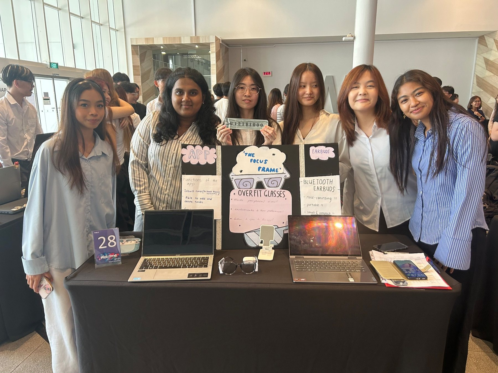
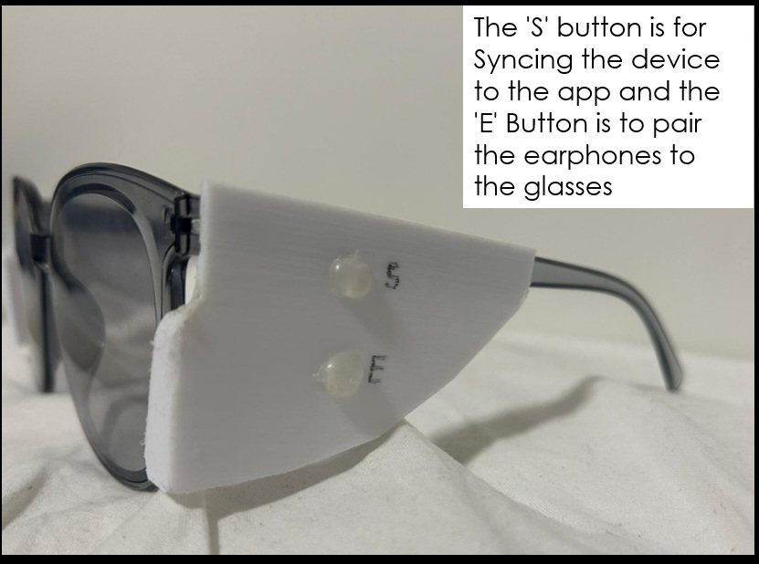
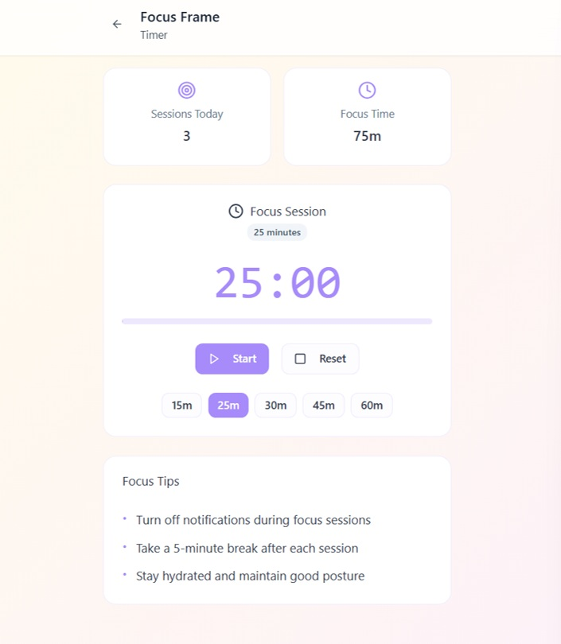
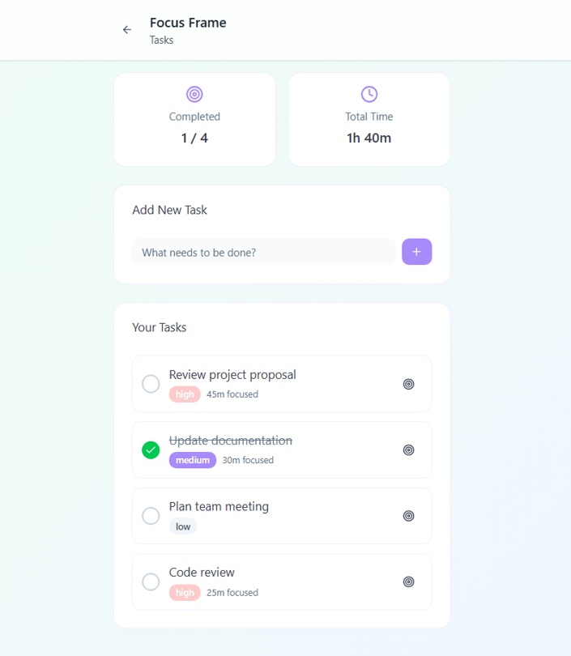
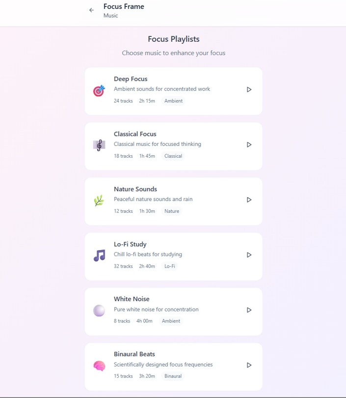
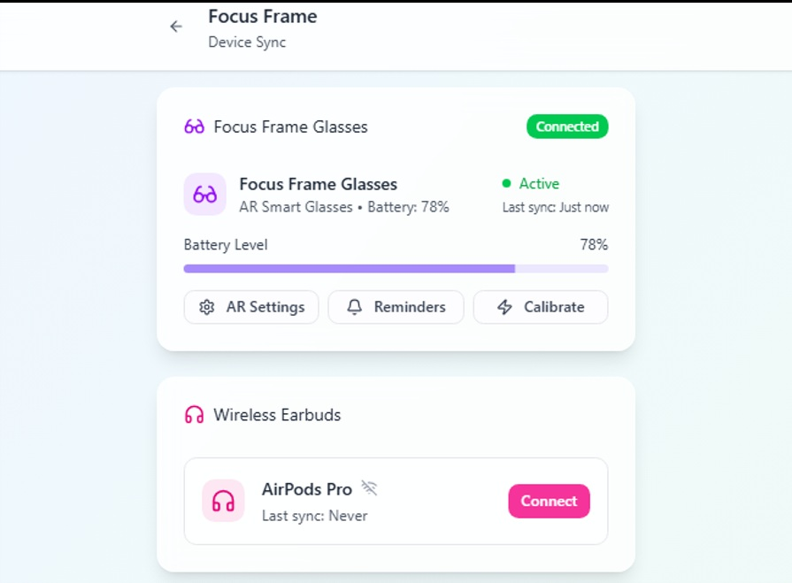
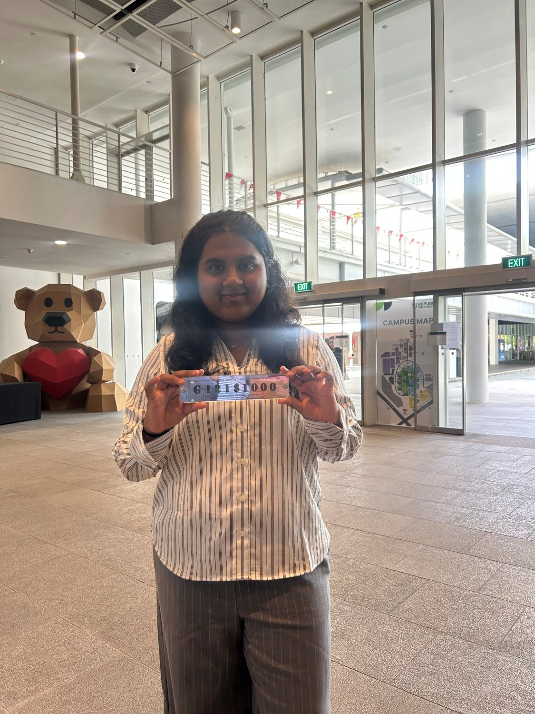
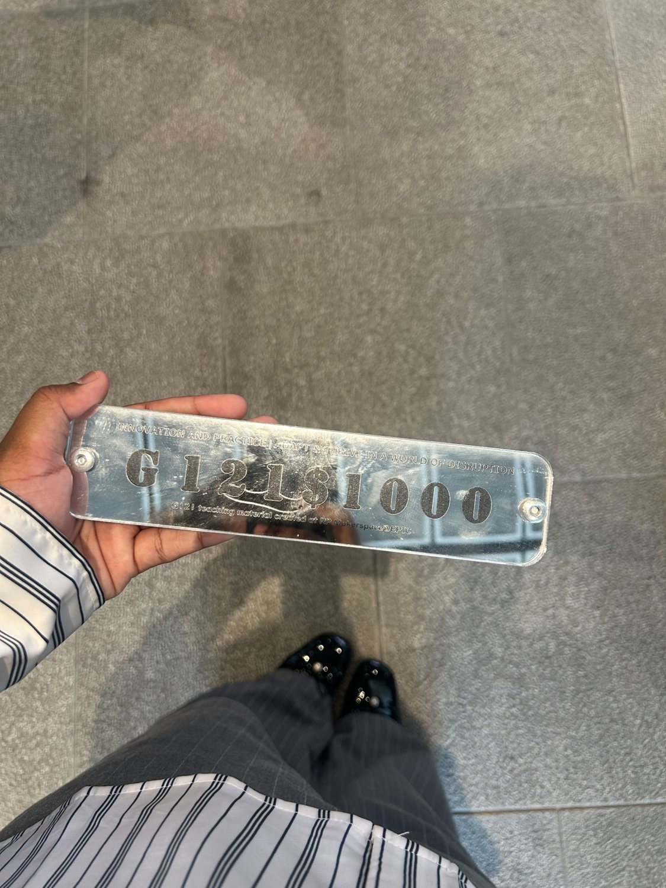

The Focus Frame
Exploring how smart-glasses technology and a companion app could help students with ADHD manage distractions during study sessions.
The idea
For our G121 team project, we started with a question: How might we help students with ADHD focus better? We wanted to explore a practical way to reduce distractions while giving students more control over their study routines.
Our concept, The Focus Frame, combined smart glasses, a companion app and wireless earphones. We created a low-fidelity physical prototype of the glasses and a low-fidelity companion app prototype to demonstrate the proposed user experience. These were concept demonstrations, not finished products.

How the concept works
The glasses were designed with side panels to limit peripheral distractions, using a fit-over-glasses style so they could be worn over existing eyewear. We also proposed an AI-enabled display and Bluetooth pairing with earphones. These were planned product features, not working electronics in our physical mock-up.

Low-fidelity companion app prototype
We designed app screens to illustrate the study tools students could use alongside the glasses:
- Focus timer for timed study sessions and tracking focus time.
- Task list to add, manage and complete tasks.
- Focus music with different playlists and sounds.
- Device sync screens for the proposed glasses and earphones.
- History to review study activity and progress.




Prototype scope: Both the physical glasses mock-up and companion app design were low-fidelity prototypes intended to communicate the concept. The AI, Bluetooth and device-integration features were proposed rather than demonstrated as working technology.
Planning and teamwork
As a six-member team, we worked on the product idea, prototype and presentation, and considered how the concept might be priced and customised for different users. As team lead, I helped coordinate our work and bring the different parts of the proposal together for the final showcase.
Recognition
Our project received a Silver Medallion at the G121 showcase. Presenting the concept gave us the chance to explain both the problem we wanted to address and how our proposed solution could help.


What I learned
This project taught me how to turn a problem statement into a product concept, communicate design ideas through low-fidelity physical and app prototypes, and work with a team to present a proposed solution. It also helped me think more carefully about the difference between an idea, a prototype and a finished product.